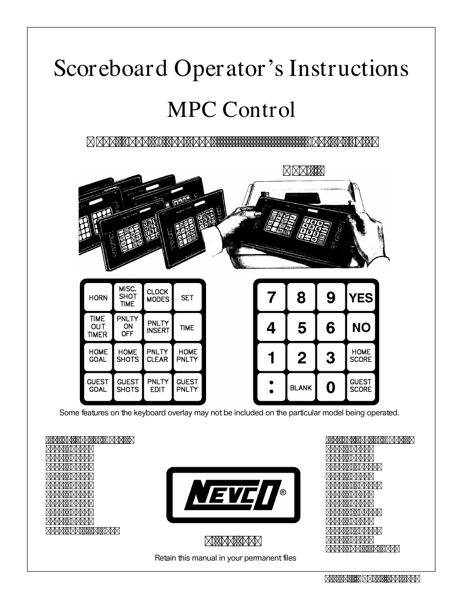

LEARN YOUR RINK'S CONTROLLER
Nevco MPC-4 · K2-28
Colon key · model code 008-3261 · four-row keypads.
ARENA SCOREBOARD● CLOCK STOPPED
RINKSIDE ARENA HOCKEY
SHOTS 0 HOME · GUEST 0
0GOAL LIGHT
15:00
PERIOD 10GOAL LIGHT
—
◉PENALTIES RUN
—
CONTROL CONSOLEPhoto & manual ↓
Physical key positions preserved · swipe the console sideways on a phone
Controller photo & manual · Nevco MPC-4 · K2-28

Training configuration & limits
Hockey overlay K2-28, configuration 008-3261. No shot clocks. Alternate switch works only with no handheld attached. Ten penalties per side are a trainer limit; hardware has larger per-player memory. Clock modes here expose local time only; automatic startup programs and auxiliary clocks are omitted. Exact-score entry follows the local single-digit guide, with TIME returning to the clock.
Documented Canadian use: Kitsilano, British Columbia. Rink evidence ↗